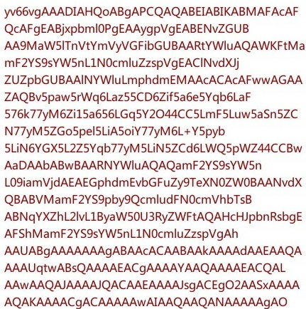

<!DOCTYPE html>
<html lang="en">

<head>
    <meta charset="UTF-8">
    <meta name="viewport" content="width=device-width, initial-scale=1.0">
    <title>Document</title>
    <!-- <script src="../../JsUtil/gocr.js"></script> -->
</head>

<body>
    <!-- <canvas id="test" width="900" height="900"></canvas> -->
    <canvas id="can1" width="800" height="1000"></canvas>
    <!--  -->
    <script>
        // var drawing = document.getElementById("test");
        // var img1 = document.getElementById("img1"); 
        // let context = drawing.getContext("2d");
        // 图片增加了canvas操作的复杂度：必须等到图片完全加载后才能对其进行操作。
        // 浏览器通常会在页面脚本执行的同时异步加载图片。
        // 如果试图在图片未完全加载之前就将其呈现到canvas上，那么canvas将不会显示任何图片。
        // 因此，开发人员要特别注意，在呈现之前，应确保图片已经加载完毕。

        let can1 = document.querySelector("#can1");
        let draw = can1.getContext("2d");
        // 字型数据
        var letterData = {};

        function loadImg() {
            var beauty = new Image();
            beauty.src = "../../assets/img/imageRecognition.jpg";

            beauty.onload = function () {
                draw.drawImage(beauty, 0, 0);
                console.log(beauty.width);
            }
            // var imageData = context.getImageData(0, 0, 5, 5);
            // console.log(imageData);
        }
        window.addEventListener('load', loadImg, false);
        //1.
        function recognition() {
            // 字符库
            var letters = '0123456789abcdefghijklmnopqrstuvwxyzABCDEFGHIJKLMNOPQRSTUVWXYZ+';
            //px和字体位置不能交换
            draw.font = "16px 微软雅黑";
            //首字母小写
            draw.textBaseline = "top";

            for (let i = 0, len = letters.length; i < len; i++) {
                var letter = letters[i];
                var width = draw.measureText(letter).width;
                draw.fillStyle = "#fff";
                draw.fillRect(0, 0, width, 22);
                //绘制文字
                draw.fillStyle = "#000";
                draw.fillText(letter, 0, 0);
                letterData[letter] = {
                    width: width,
                    data: getBinary(draw.getImageData(0, 0, width, 22).data)
                }
                //清空
                draw.clearRect(0, 0, width, 22);
            }
        }

        //2.
        // 要识别的文字开始坐标
        var x = beginX = 8;
        var y = beginY = 161;
        // 行高
        var lineHeight = 24;
        // 递归次数
        var count = 0;
        // 结果文本
        var result = '';

        function findLetter(x, y, res) {
            // 找到结果文本，则递归结束
            if (result) {
                return;
            }
            // 递归次数自增1
            ++count;
            // 队列，用于储存可能匹配的字符
            var queue = [];
            // 循环匹配字符库字型数据
            console.log("findLetter", letterData);
            for (var letter in letterData) {
                // 获取当前字符宽度
                var width = letterData[letter].width;
                // 获取该矩形区域下的灰度化0-1数据
                var data = getBinary(draw.getImageData(x, y, width, 22).data);
                // 当前字符灰度化数据与当前矩形区域下灰度化数据的偏差量
                var deviation = 0;
                // 一个临时变量以确定是否到了行末
                var isEmpty = true;
                // 如果当前矩形区域已经超出图片宽度，则进行下一个字符匹配
                if (x + width > 431) {
                    continue;
                }
                // 计算偏差
                for (var i = 0, l = data.length; i < l; ++i) {
                    // 如果发现存在的有效像素点，则确定未到行末
                    if (isEmpty && data[i]) {
                        isEmpty = false;
                    }
                    // 不匹配的像素点，偏差量自增1
                    if (data[i] != letterData[letter].data[i]) {
                        ++deviation;
                    }
                }
                // 由于调试时是在猎豹浏览器下进行的，而不同浏览器下的绘图API表现略有不同
                // 考虑到用Chrome的读者应该也不少，故简单地针对Chrome对偏差进行一点手动微调
                // （好吧，我承认我是懒得重新调整getBinary方法的灰度化、0-1化公式=_=||）
                // 下面这段if分支在猎豹浏览器下可以删除
                if (letter == 'F' || letter == 'E') {
                    deviation -= 6;
                }
                // 如果匹配完所有17行数 据，则递归结束
                if (y > beginY + lineHeight * 17) {
                    result = str;
                    console.log("res:",result);
                    break;
                }
                // 如果已经到了行末，重置匹配坐标
                if (isEmpty) {
                    x = beginX;
                    y += lineHeight;
                    str += '\n';
                }
                // 如果偏差量与宽度的比值小于3，则纳入匹配队列中
                // 这里也是算法中的关键点，怎样的偏差量可以纳入匹配队列中
                // 刚开始是直接用绝对偏差量判断，当偏差量小于某个值的时候则匹配成功，但调试过程中发现不妥之处
                // 字符字型较小的绝对偏差量自然也小，这样l，i等较小的字型特别容易匹配成功
                // 因此使用偏差量与字型宽度的比值作为判断依据较为合理
                // 而这个判断值3的确定也是难点之一，大了递归的复杂度会大为增长，小了很可能将正确的字符漏掉
                if (deviation / width < 3) {
                    queue.push({
                        letter: letter,
                        width: width,
                        deviation: deviation
                    });
                }
            }
            // 如果匹配队列不为空
            if (queue.length) {
                // 对队列进行排序，同样是根据偏差量与字符宽度的比例
                queue.sort(compare);
                console.log(queue);
                // 从队头开始进行下一个字符的匹配
                for (var i = 0; i < queue.length && !result; ++i) {
                    var item = queue[i];
                    // 下一步递归
                    findLetter(x + item.width, y, str + item.letter);
                }
            } else {
                return false;
            }
        }

        // 两个匹配到的字符的比较方法，用于排序
        function compare(letter1, letter2) {
            return letter1.deviation / letter1.width - letter2.deviation / letter2.width;
        }

        // 图像数据的灰度化及二值灰度化
        function getBinary(data) {
            var binaryData = [];
            for (var i = 0, l = data.length; i < l; i += 4) {
                // 一种是正常的灰度化公式，加权平均法
                // binaryData[i / 4] = (data[i] * 0.3 + data[i + 1] * 0.59 + data[i + 2] * 0.11) < 90;
                // 平均值法，结果比较理想
                binaryData[i / 4] = (data[i] + data[i + 1] + data[i + 2]) / 3 < 200;
            }
            return binaryData;
        }

        recognition();
        findLetter(beginX, beginY, '');
        console.log("res",result);
    </script>
</body>

</html>